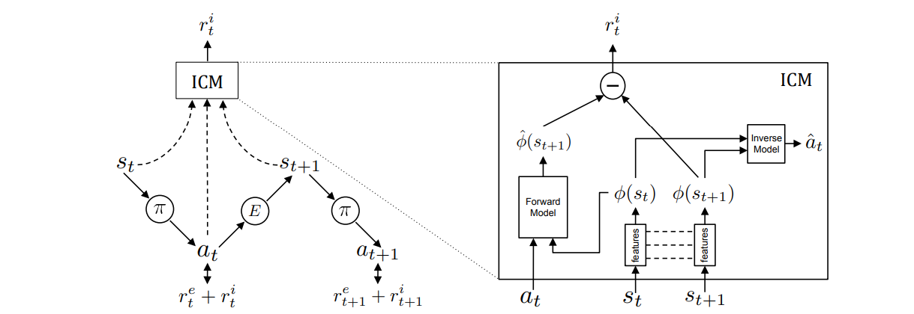
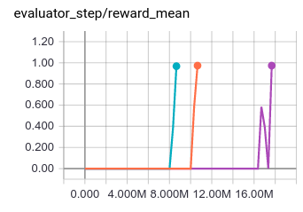
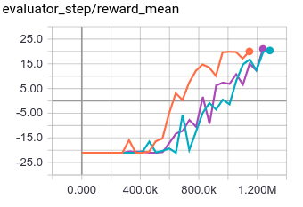
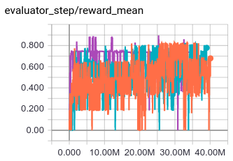

ICM¶
概述¶
ICM (Intrinsic Curiosity Module) 首次在论文 Curiosity-driven Exploration by Self-supervised Prediction 中提出, 用于研究在稀疏奖励的环境中，如何让agent探索更多没有经历过的状态，学到技能。它的主要想法是使用‘好奇心’作为内在奖励的信号，让agent更有效地探索环境。
算法试图解决的困难：
高维度的连续状态空间(比如图像信息）很难建立直观的dynamic model，即 \(p_\theta(s_{t+1}, a_t)\) ;
环境中的observation和agent自身行为的相关性有所区别，大致可以分为：
agent可以直接控制的元素（比如自动驾驶场景中自车的位置，速度）；
虽然不受agent控制但是会对agent造成影响的元素（比如自动驾驶场景中他车的位置，速度）；
既不受agent控制又不会对agent造成影响的元素（比如自动驾驶场景中太阳光的强弱，虽然会对传感器造成影响，但是本质上不会影响驾驶行为）。
对于以上的三种类型的observation元素，我们希望提取(a)(b)两种情境下的环境特征，（这两种环境特征与agent的动作相关），而忽略(c)情景下特征（这种环境特征与agent的动作无关）。
特色：特征空间的描述 使用一个特征空间来表征环境，而并不是直接使用原始的observation来表征环境，这样可以提取出来只与agent动作相关的特征，并忽略与环境特征无关的特征。 基于这个特征空间的表述，提出逆向模型 (reward module) 和前向模型 (forward module)。 逆向模型 核心思想在于通过当前状态和下一个时刻的状态的表征，估计出当前状态采用的动作值。对于当前动作估计的越准确，说明对于agent可以控制的环境元素的表征就越好。 前向模型 核心思想在于通过当前状态表征和当前动作，估计出下一个时刻的状态表征。 这个模型可以让学到的状态表征更加容易预测。
ICM的agent有两个子系统： 一个子系统是 内在奖励生成器，它把前向模型的预测误差作为内在奖励（因此总奖励为内在奖励和稀疏的环境奖励之和）； 另一个子系统是一个 策略网络，用于输出一系列的动作。训练策略网络的优化目标就是总分数的期望，因此策略的优化既会考虑让稀疏的环境奖励得到更多，也会探索此前没有见过的动作，以求得到更多的内在奖励。
核心要点¶
在后续的工作中 Large-Scale Study of Curiosity-Driven Learning, 使用的基线算法是PPO， 可以参考我们的实现 PPO，通过PPO算法，只需要少量的超参数微调，就可以获得鲁棒的学习效果。
虽然逆向模型和前向模型都会参与loss的计算，但是只有前向模型会当做intrinsic reward。前向模型的loss越大，说明依据当前状态特征和当前动作对下一时刻状态特征的估计越不准确，也就是这个状态以前没有遇到过，值得探索；逆向模型并不作为intrinsic reward,它（逆向模型）的作用主要是为了在特征空间提取的过程中，更好地帮助表征与agent动作相关的环境特征。
奖励归一化。 由于奖励是不稳定的，因此需要把奖励归一化到[0,1]之间，让学习更稳定，在这里我们使用最大最小值归一化方法。
特征归一化。 通过整合内在奖励和外在奖励的过程中，确保内在奖励在不同特征表述的缩放很重要，这一点可以通过batch normalization来实现。
更多的actor（在DI-engine中为更多的collector)： 增加更多并行的actor可以使得训练更加稳定。
关键方程或关键框图¶
ICM算法的整体训练与计算流程如下：
{kind=link}
1. 如左图所示，agent在状态 \(s_t\) 通过当前的策略 \(\pi\) 采样得到动作 a并执行，最终得到状态 \(s_{t+1}\)。 总的奖励为两个部分奖励之和，一部分是外部奖励 \(r_t^e\)，即环境中得到的，稀疏的奖励；另一部分是由ICM得到的内在奖励 \(r_t^ｉ\) （具体计算过程由第4步给出），最终的策略的需要通过优化总的奖励来实现训练的目的。 具体公式表现为：
\(ｒ_t=r_t^i + r_t^e\)
\({\max}_{\theta_p}\mathbb{E}_{\pi(s_t;\theta_p)}[\Sigma_t r_t]\)
在ICM的逆向模型中，它首先会把 \(s_t\) 和 \(s_{t+1}\) 提取表征后的特征向量 \(\Phi(s_t; \theta_E)\) 和 \(\Phi(s_{t+1}; \theta_E)\) 作为输入（后面把它们简化为 \(\Phi(s_t)\) 和 \(\Phi(s_{t+1})\)），并且输出预测的动作值 \(a_t\) 。
\(\hat{a_t}=g(\Phi(s_t),\Phi(s_{t+1}) ; \theta_I)\)
\({\min}_{\theta_I, \theta_E} L_i(\hat{a_t},a_t)\)
在这里 \(\hat{a_t}\) 是 \(a_t\) 的预测值， \(L_Ｉ\) 描述两者之间的差异 (cross entropy loss) 。差异越小，说明对于当前动作估计的越准确，说明对于agent可以控制的环境元素的表征就越好。
３．ICM的前向模型会把 \(\Phi(s_t)\) 和动作值 \(a_t\) 作为输入， 输出下一个时刻状态的特征向量的预测数值 \(\hat{\Phi}(s_{t+1})\) 。 下一时刻预测的特征向量和真实的特征向量的误差被用来当做内在奖励。
\(\hat{\phi(s_{t+1})}=f(\Phi(s_t),a_t) ; \theta_F)\)
\({\min}_{\theta_F, \theta_E} L_F(\hat{\phi(s_{t+1})},\phi(s_{t+1}))\)
在这里， \(L_Ｆ\) 描述了 \(\hat{\phi(s_{t+1})}\) 和 \(\phi(s_{t+1})\) 之间的差异 (L2 loss), 通过前向模型的学习，可以让学习的特征表征更加容易预测。
４．内在奖励可以由 \(\hat{\phi(s_{t+1})}\) 和 \(\phi(s_{t+1})\) 之间的差异来表征：
\(r_i^t = \frac{\eta}{2} (\| \hat{\phi(s_{t+1})} - \phi(s_{t+1}) \|)_2^2\)
总结： ICM通过前向模型和逆向模型，会提取更多会受到agent影响的环境元素特征；对于那些agent的动作无法影响的环境元素（比如噪声），将不会产生内在奖励，进而提高了探索策略的鲁棒性。 同时，１－４也可以写作一个优化函数：
\({\min}_{\theta_P,\theta_I,\theta_F，\theta_E} [- \lambda \mathbb{E}_{\pi(s_t;\theta_p)}[\Sigma_t r_t] + (1-\beta)L_I + \beta LF]\)
在这里 \(\beta \in [0,1]\) 用来权衡正向模型误差和逆向模型误差的权重； \(\lambda >0\) 用来表征策略梯度误差对于内在信号的重要程度。
重要实现细节¶
1. 奖励归一化。由于智能体在不同的阶段和环境下，奖励的幅度变化可能会很剧烈，如果直接用作后续的计算，很容易造成后续学习的不稳定。 在我们的实现中，是按照下面的最大最小归一化公式，归一化到[0,1]之间:
reward = (reward - reward.min()) / (reward.max() - reward.min() + 1e-8)
2. 使用残差网络来拟合前向模型。由于observation的表征维度比较大，而动作值往往是一个离散的数值。 因此在计算前向模型的时候，使用残差网络可以比较好的保留动作值的信息，从而的得到比较好的环境表征。
pred_next_state_feature_orig = torch.cat((encode_state, action), 1)
pred_next_state_feature_orig = self.forward_net_1(pred_next_state_feature_orig)
for i in range(4):
pred_next_state_feature = self.residual[i * 2](torch.cat((pred_next_state_feature_orig, action), 1))
pred_next_state_feature_orig = self.residual[i * 2 + 1](torch.cat((pred_next_state_feature, action), 1)
) + pred_next_state_feature_orig
pred_next_state_feature = self.forward_net_2(torch.cat((pred_next_state_feature_orig, action), 1))
实现¶
内在好奇心模型( ICMRewardModel )的接口定义如下：
- class ding.reward_model.icm_reward_model.ICMRewardModel(config: easydict.EasyDict, device: str, tb_logger: SummaryWriter)[source]
- Overview:
The ICM reward model class (https://arxiv.org/pdf/1705.05363.pdf)
- Interface:
estimate,train,collect_data,clear_data,__init__,_train,
- clear_data() None[source]
- Overview:
Clearing training data. This can be a side effect function which clears the data attribute in
self
- collect_data(data: list) None[source]
- Overview:
Collecting training data in designated formate or with designated transition.
- Arguments:
data (
Any): Raw training data (e.g. some form of states, actions, obs, etc)
- Returns / Effects:
This can be a side effect function which updates the data attribute in
self
- estimate(data: list) None[source]
- Overview:
estimate reward
- Arguments:
data (
List): the list of data used for estimation
- Returns / Effects:
This can be a side effect function which updates the reward value
If this function returns, an example returned object can be reward (
Any): the estimated reward
- train() None[source]
- Overview:
Training the reward model
- Arguments:
data (
Any): Data used for training
- Effects:
This is mostly a side effect function which updates the reward model
ICMNetwork¶
首先我们定义类 ICMNetwork 涉及四种神经网络：
self.feature: 对observation的特征进行提取；
self.inverse_net: ICM网络的逆向模型，通过将先后两帧feature特征作为输入，输出一个预测的动作
self.residual: 参与ICM网络的前向模型，通过多次将action与中间层的输出做concat,使得特征更加明显
self.forward_net: 参与ICM网络的前向模型，负责输出 \(s_{t+1}\) 时刻的feature
class ICMNetwork(nn.Module): r""" Intrinsic Curiosity Model (ICM Module) Implementation of: [1] Curiosity-driven Exploration by Self-supervised Prediction Pathak, Agrawal, Efros, and Darrell - UC Berkeley - ICML 2017. https://arxiv.org/pdf/1705.05363.pdf [2] Code implementation reference: https://github.com/pathak22/noreward-rl https://github.com/jcwleo/curiosity-driven-exploration-pytorch 1) Embedding observations into a latent space 2) Predicting the action logit given two consecutive embedded observations 3) Predicting the next embedded obs, given the embeded former observation and action """ def __init__(self, obs_shape: Union[int, SequenceType], hidden_size_list: SequenceType, action_shape: int) -> None: super(ICMNetwork, self).__init__() if isinstance(obs_shape, int) or len(obs_shape) == 1: self.feature = FCEncoder(obs_shape, hidden_size_list) elif len(obs_shape) == 3: self.feature = ConvEncoder(obs_shape, hidden_size_list) else: raise KeyError( "not support obs_shape for pre-defined encoder: {}, please customize your own ICM model". format(obs_shape) ) self.action_shape = action_shape feature_output = hidden_size_list[-1] self.inverse_net = nn.Sequential(nn.Linear(feature_output * 2, 512), nn.ReLU(), nn.Linear(512, action_shape)) self.residual = nn.ModuleList( [ nn.Sequential( nn.Linear(action_shape + 512, 512), nn.LeakyReLU(), nn.Linear(512, 512), ) for _ in range(8) ] ) self.forward_net_1 = nn.Sequential(nn.Linear(action_shape + feature_output, 512), nn.LeakyReLU()) self.forward_net_2 = nn.Linear(action_shape + 512, feature_output) def forward(self, state: torch.Tensor, next_state: torch.Tensor, action_long: torch.Tensor) -> Tuple[torch.Tensor, torch.Tensor, torch.Tensor]: r""" Overview: Use observation, next_observation and action to genearte ICM module Parameter updates with ICMNetwork forward setup. Arguments: - state (:obj:`torch.Tensor`): The current state batch - next_state (:obj:`torch.Tensor`): The next state batch - action_long (:obj:`torch.Tensor`): The action batch Returns: - real_next_state_feature (:obj:`torch.Tensor`): Run with the encoder. Return the real next_state's embedded feature. - pred_next_state_feature (:obj:`torch.Tensor`): Run with the encoder and residual network. Return the predicted next_state's embedded feature. - pred_action_logit (:obj:`torch.Tensor`): Run with the encoder. Return the predicted action logit. Shapes: - state (:obj:`torch.Tensor`): :math:`(B, N)`, where B is the batch size and N is ''obs_shape'' - next_state (:obj:`torch.Tensor`): :math:`(B, N)`, where B is the batch size and N is ''obs_shape'' - action_long (:obj:`torch.Tensor`): :math:`(B)`, where B is the batch size'' - real_next_state_feature (:obj:`torch.Tensor`): :math:`(B, M)`, where B is the batch size and M is embedded feature size - pred_next_state_feature (:obj:`torch.Tensor`): :math:`(B, M)`, where B is the batch size and M is embedded feature size - pred_action_logit (:obj:`torch.Tensor`): :math:`(B, A)`, where B is the batch size and A is the ''action_shape'' """ action = one_hot(action_long, num=self.action_shape) encode_state = self.feature(state) encode_next_state = self.feature(next_state) # get pred action logit concat_state = torch.cat((encode_state, encode_next_state), 1) pred_action_logit = self.inverse_net(concat_state) # --------------------- # get pred next state pred_next_state_feature_orig = torch.cat((encode_state, action), 1) pred_next_state_feature_orig = self.forward_net_1(pred_next_state_feature_orig) # residual for i in range(4): pred_next_state_feature = self.residual[i * 2](torch.cat((pred_next_state_feature_orig, action), 1)) pred_next_state_feature_orig = self.residual[i * 2 + 1]( torch.cat((pred_next_state_feature, action), 1) ) + pred_next_state_feature_orig pred_next_state_feature = self.forward_net_2(torch.cat((pred_next_state_feature_orig, action), 1)) real_next_state_feature = encode_next_state return real_next_state_feature, pred_next_state_feature, pred_action_logit
实验结果¶
环境： MiniGrid-DoorKey-8x8-v0； 基线算法: ppo_offpolicy， 实验的三条线为三个种子，id 分别为: 0, 10, 20
环境： PongNoFrameskip-v4； 基线算法: ppo_offpolicy， 实验的三条线为三个种子，id 分别为: 0, 10, 20
环境： MiniGrid-FourRooms-v0； 基线算法: ppo_offpolicy， 实验的三条线为三个种子，id 分别为: 0, 10, 20
参考资料¶
Pathak D, Agrawal P, Efros A A, et al. Curiosity-driven exploration by self-supervised prediction[C]//International conference on machine learning. PMLR, 2017: 2778-2787.
Burda Y, Edwards H, Storkey A, et al. Exploration by random network distillation[J]. https://arxiv.org/abs/1810.12894v1. arXiv:1810.12894, 2018.